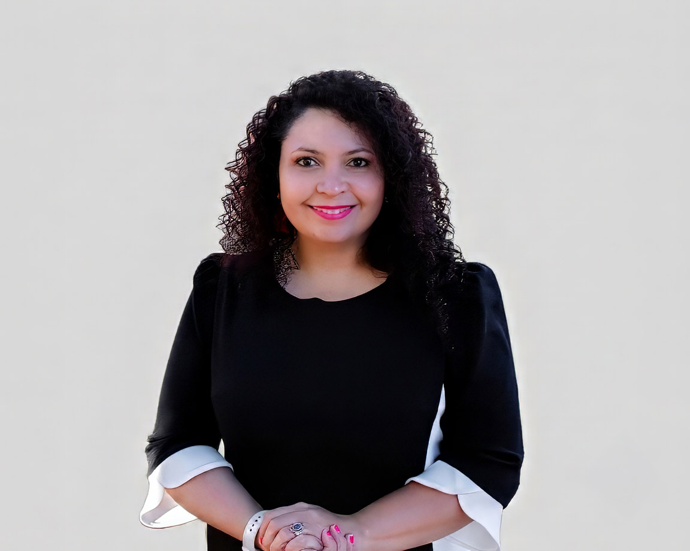

Hi, I’m Lucy DeWeese
I’m a photographer, graphic designer, and mom of three. I’ve always loved noticing the little things that make life special, the laughter, the personalities, the quiet moments, and the connections we share with the people we love.
My love for photography began when I was in sixth grade. Even then, I loved taking pictures of the people and moments around me and looking back at them years later. I didn’t realize it at the time, but I was learning something that would stay with me for the rest of my life. Moments pass, but photographs give us a way to remember them.
In 2017, I lost my mother, Deusa. Losing her changed the way I saw photographs. They became more than beautiful images. They became pieces of a life I could no longer recreate, and reminders of moments I was grateful to still have.
Two years later, my daughter Luna Deusa was born. Her arrival brought so much joy into my life. While photographing her and studying at BYU Idaho, I began to see photography differently. What had always been a passion started to feel like something I wanted to pursue more intentionally. I realized I could use something I loved to help other families preserve their own stories.
My background in Web Design and Development, along with the art and design courses I took while developing my graphic design skills, has also shaped the way I see photography. I love bringing together creativity, composition, storytelling, and emotion to create images that feel personal and genuine.
Today, I photograph families because I know how quickly life changes. Children grow. Seasons pass. The little moments we live every day become the memories we look back on.
And sometimes, a photograph becomes one of the most precious ways we have to hold on to them.